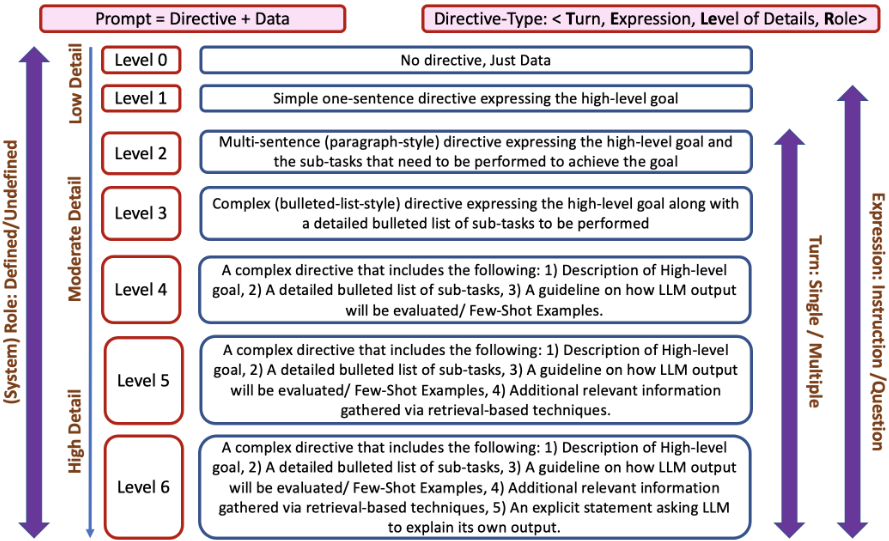

TELeR：面向复杂任务基准测试的 LLM 提示通用分类法
LLM 在病态定义（ill-defined）复杂任务上的表现对提示的类型、风格与细节程度极为敏感，若基准研究只报告指标而不说明提示细节，跨研究、跨模型的比较便失去意义。论文提出 TELeR 通用提示分类法：将提示视为 Directive 与 Data 的组合，按 Turn（轮次）、Expression（question/instruction 风格）、Level of Details（细节程度，Limitations 中提及共七级）、Role（是否设定 system 角色）四个维度统一分类。作者以元评审（meta-review）生成与多叙事编织（narrative braiding）两个示例任务演示了如何按该分类构造不同级别的提示。核心主张是：未来基准研究应采用 TELeR 报告所用提示的类别，从而实现跨研究的 apple-to-apple 比较，更快形成对 LLM 复杂任务能力的状态共识。需注意这是立场型工作，正文未包含定量实验。
LLM 在复杂任务（ill-defined、目标抽象、依赖主观解释、难以定量评估）上的性能随提示类型/风格与细节程度剧烈变化；基准研究若只报告准确率而不说明提示的细粒度差异，跨研究比较就无意义。论文旨在建立一个通用的提示分类标准，使不同研究能以统一口径报告所用提示类别，实现公平比较。
提出 TELeR 分类法：将每个提示表示为 Directive（指令）与 Data（数据）的组合，在 Data 固定的前提下按四个维度分类——Turn（单轮/多轮）、Expression（question 风格/instruction 风格）、Level of Details（细节程度，论文 Limitations 提及共七级）、Role（是否定义 system 角色）。论文用两个复杂任务示例演示：从多篇专家评审生成 meta-review、将多条备选叙事编织为单一叙事，分别给出单轮 question 风格与 instruction 风格、不同细节级别的示例提示。
未在论文中说明
已有提示技术（few-shot、CoT、ReAct、RCI 等）主要针对 well-defined NLP 任务，而面向 ill-defined 复杂任务的多样化提示研究稀缺，且缺乏统一标准导致不同基准研究无法公平比较。TELeR 的区别在于：不提出新提示技巧，而是提供首个面向复杂任务的通用提示分类标准，使各研究可按同一维度报告提示类别，实现 apple-to-apple 比较。
相关度级别：high
命中能力域：3.2 提示工程 | 3.5 评测与可靠使用
理由：论文直接命中 3.2 提示工程域的'提示技术与模式、提示词资产管理与复用'：TELeR 的四维分类（Turn/Expression/Level of Details/Role）可作为团队提示库的标注与组织体系；同时其动机与产出服务于 3.5 评测域——让不同模型/提示方案的评测结果按提示类别做可比对照，与团队'产出质量与可靠性的评测保障'直接对应。团队的代码审查、文档生成、知识库问答等场景均属论文定义的复杂任务，该分类法可作为内部提示设计与评测报告的统一词汇表。但需注意论文为立场型工作，无定量实验支撑。
建议动作：作为方法参考存档
arXiv:2305.11430v2 [cs.AI] 2023年10月24日
Shubhra Kanti Karmaker（'Santu'）、Dongji Feng
大数据智能（Big Data Intelligence，BDI）实验室
美国阿拉巴马州奥本大学计算机科学与软件工程系 {sks0086, dzf0023}@auburn.edu
尽管大语言模型（LLM）在传统对话场景中的文本理解与生成方面已展现出巨大成功，但其在执行定义不明确的复杂任务方面的潜力在很大程度上仍研究不足，且尚未进行基准测试（benchmark）。然而，开展此类基准测试研究颇具挑战性，原因在于当使用不同类型/风格的提示（prompt）以及提示中提供不同程度的细节时，LLM 的性能会出现较大差异。为解决这一问题，本文提出了一种通用分类体系（taxonomy），可用于设计具有特定属性的提示，从而执行广泛的复杂任务。该分类体系将使未来的基准测试研究能够报告其研究中所使用提示的具体类别，从而实现不同研究之间有意义的比较。此外，通过该分类体系建立共同标准，研究人员将能够就 LLM 在特定复杂任务上的性能得出更为准确的结论。
近年来，以 GPT-3 (Brown et al., 2020)、Bard (Thoppilan et al., 2022)、LLaMA (Touvron et al., 2023)、BLOOM (Scao et al., 2022)、PaLM (Chowdhery et al., 2022) 等为代表的对话式大语言模型（Large Language Models, LLMs）在众多流行的自然语言处理（Natural Language Processing, NLP）任务中展现出了卓越的性能 (Bubeck et al., 2023; Dai et al., 2022; Du et al., 2022; Smith et al., 2022)。提示（prompt）作为一种激励器（stimulator），是指提供给 LLM 的文本输入，其目的在于引导 LLM 的输出朝向特定任务。毫不意外，提示的质量和有效性会在很大程度上影响 LLM 在特定任务上的表现，因此，设计具有恰当细节程度的合适提示变得比以往任何时候都更加重要 (Liu et al., 2023; Han et al., 2022)。
近年来，研究人员投入了大量精力，提出了多种设计“合适”提示的方法。例如，Brown et al. (2020) 展示了一种使用问答对的标准提示技术，该技术能够产生少样本（few-shot）效应。研究人员还探索了其他提示设计技术，例如思维链（Chain-of-thought, CoT）(Wei et al., 2022)、推理与行动（Reasoning and Acting, ReAct）(Yao et al., 2022) 以及其他技术 (Kojima et al., 2022; Madaan and Yazdanbakhsh, 2022; Press et al., 2022)，以改进 LLM 在求解问答（Question-Answering）任务时的推理与行动能力。与此同时，Kim et al. (2023) 提出了一种提示方案，其中 agent 递归地批评并改进其自身输出（RCI）来求解任务。然而，这些实验主要侧重于利用多样化的提示来评估 LLM 执行“良定义”（well-defined）NLP 任务的能力，而使用多样化提示来处理“非良定义”（ill-defined）复杂任务的研究即便不是完全不存在，也仍然十分罕见。
尽管使用各种大语言模型（LLM）针对复杂任务开展多项基准测试（benchmark）研究看似有趣且颇具吸引力，但开展此类研究极具挑战性，原因在于：当使用不同类型/风格的提示（prompt）并在提示中提供不同程度的细节时，LLM 的性能会出现很大差异，在复杂任务的情况下尤其如此。在本文中，我们专门聚焦于理解 LLM 执行复杂任务的潜力，这些复杂任务大多具有如下特点：1）定义不明确；2）面向抽象目标；3）高度依赖主观解释；4）极难进行定量评估（Khot et al., 2022; Press et al., 2022）。这些复杂任务通常涉及多个步骤/子任务，为此类任务设计“合适的”提示确实颇具挑战性，因为在这类情况下并没有单一的规则手册可供遵循（Zelikman et al., 2022; Nye et al., 2021）。如果我们想要比较两项针对同一目标（复杂）任务的独立基准测试研究，还会出现进一步的复杂情况。之所以会出现这种复杂情况，是因为对于给定的复杂任务和特定的 LLM，当向其输入不同类型/风格的提示时，LLM 的性能可能发生剧烈变化。事实上，提示中所包含的具体细节对 LLM 求解目标复杂任务的表现有着重大影响。如果在提供给 LLM 的提示方面未进行同口径（apple-to-apple）比较，这确实会给评估和基准测试带来问题。换言之，仅报告 LLM 的准确率数字而不具体说明实验中所用提示的细节，会使跨 LLM 的比较变得毫无意义。
遗憾的是，每个复杂任务都不尽相同，用户为执行任务而尝试使用的提示也各不相同；因此，能够以单一标准/分类体系对这些多样化的提示进行归类的通用分类体系（taxonomy）已成为迫切需求。本文的主要贡献是提出这样一种通用分类体系（我们将其命名为 TELeR），任何利用 LLM 执行某种复杂任务的基准测试研究均可使用。采用我们提出的 TELeR 分类体系的主要益处在于，它将促进对多个独立研究人员/开发者团队所报告的 LLM 在各种复杂任务上的性能进行更有意义的比较，从而有助于得出更准确的结论。TELeR 将通过把不同类型的提示纳入统一标准，并允许使用同一标准在不同提示类别之间进行同口径比较来实现这一目标。因此，该分类体系将作为一个重要工具，用于围绕执行复杂任务的最先进（state-of-the-art）LLM 性能建立共同共识。
提示工程（Prompt Engineering）是在各种任务中最大化大语言模型（LLM）效用的关键技术 (Zhou et al., 2022)。它涉及精心构思并修改查询或上下文，以引导 LLM 产生期望的响应或行为 (Brown et al., 2022)。在实践中，提示工程是一个需要经过多次试错的迭代过程 (Shao et al., 2023)。
在使用 LLM 执行复杂任务 (Tan et al., 2023) 时，提示工程变得更加关键且更具挑战性，因为复杂任务通常涉及多个步骤/子任务，需要更高层次的语义理解、规划、推理和自然语言生成 (Fu et al., 2022)。这些任务往往要求模型超越简单的模式识别或信息检索，并涉及对更高级认知能力的模拟。事实上，提示在若干关键因素上的差异会对 LLM 在复杂任务中的准确性和性能产生显著影响。下面，我们列出提示设计中的这些关键因素。

构成一个“好”的响应，而什么会使响应变“坏”。例如，设置字数限制、指定输出格式或限制特定数据源等。
可以帮助它做出更明智、更精确的决策。不同的提示可能提供不同程度的上下文，这会影响模型响应的准确性。
我们提出的分类体系基于第 2 节中讨论的关键因素，这些因素的变化会在使用 LLM 执行复杂任务时导致不同的结果。首先，我们将每个提示表示为指令（Directive）与数据（Data）的组合。假设对于给定的目标任务，Data 是固定的，那么两个提示之间的差异本质上源于它们所包含指令的具体细节。更具体地说，我们提出沿以下四个维度对用于复杂任务的 LLM 提示进行分类。
由于我们使用以下四个因素，即 Turn（轮次）、Expression（表达）、Level of Details（细节程度）和 Role（角色）来定义该分类体系，因此我们将其命名为 TELeR。整个分类体系如图 1 所示。
在本节中，我们展示所提出的 TELeR 分类体系的两个有趣用例，这些用例涉及利用 LLM 执行复杂任务：1）根据同行评审人针对学术成果给出的评审意见生成元评审（meta-review）；2）将多个备选叙事合并为一个单一的交织叙事。
元评审（meta-review）是科学同行评审流程中的关键环节，通常是一项复杂任务，涉及对多位评审专家给出的评审意见进行总结（Shen et al., 2022, 2023）。对于做出明智决策以及理解专家对所投稿件意见的共识而言，这是一个非常重要且切题的过程。鉴于近年来研究稿件投稿数量激增，以及同行评审时间线管理面临的巨大挑战（Bansal et al., 2022c; Karmaker Santu et al., 2018），利用大语言模型（LLM）来协助编辑（针对期刊）/程序委员会主席（针对会议），根据相关专家评审人提供的各自评审文本，为每篇稿件准备元评审的初稿，是一种颇具吸引力的做法。
为了展示所提出的 TELeR 分类体系在为该复杂任务归类不同类型提示（prompt）方面的适用性，我们在下文展示一些细节程度各异的示例提示。为简单起见，我们仅展示系统角色未定义的单轮问答式提示示例。由于篇幅所限，其他变体未予展示。我们还假设三位评审人已对该稿件进行评审，并提供了他们的意见 ( R 1 , R 2 , R 3 ) 作为元评审生成任务的数据。
评审文本如下：< R 1 , R 2 , R 3 >
叙事编织（narrative braiding），也称为“交织”（interweaving）或“多视角叙事”（multi-perspective storytelling），是一种文学技巧，指并行讲述多条故事线，这些故事线最终汇聚并相互交叉（Bancroft, 2018）。这种技巧常用于小说、短篇故事、电影和电视节目中，以营造复杂而引人入胜的叙事。
叙事编织确实是一项复杂的任务，即使对人类而言也是如此，更不用说计算机了，因为它需要精心的规划与执行，以确保每条故事线都得到充分展开，并且叙事的各条线索彼此平衡、相互补充。若处理得当，叙事编织可以创造出一个丰富而引人入胜的故事，使读者或观众始终保持投入。鉴于语言模型近期在生成高质量受控文本方面取得的令人鼓舞的成果（Bansal et al., 2022a,b），测试大语言模型（LLM）在叙事编织任务中的表现是相当直观的想法。
现在，我们展示如何使用所提出的 TELeR 分类体系为叙事编织任务归类不同类型的提示。这一次，我们仅展示系统角色未定义的单轮指令式提示示例。由于篇幅所限，其他变体未予展示。我们还假设有两个描述同一事件的备选叙事可作为编织任务的数据，目标是从两条输入叙事 N 1 和 N 2 创建一个最终的编织叙事。
备选叙事如下：< N 1 , N 2 >
在本文中，我们强调了面向复杂任务求解的 LLM 提示采用标准化分类体系的重要性，并随后提出了这样一个通用分类体系，即 TELeR，它可以作为一个统一标准，用于对多个独立研究所报告的 LLM 性能进行比较和基准测试（benchmark）。我们敦促学术界在未来的工作中使用 TELeR 分类体系来设计提示，并在其手稿中报告其实验所采用的具体提示类别。这将使 LLM 之间的比较更具意义，从而有助于从多个独立研究中得出更准确的结论。这反过来又将帮助学术界比其他情况下更准确、更快速地就最先进的 LLM 性能达成共识。
6 局限性
所提出的 TeLER 分类体系仅适用于旨在解决复杂任务的 LLM 提示。该分类体系，尤其是其中的七个层级，并不适用于简单任务。因此，对于正在开展以执行复杂任务为核心的 LLM 应用研究与开发的研究人员和开发人员而言，TeLER 分类体系将最为有用。
此外，不应将 TeLER 分类体系视为 LLM 提示的终极分类体系，对该分类体系的进一步扩展当然是可能的，而且实际上也是人们所期望的。尽管如此，TeLER 分类体系实际上非常通用，可根据目标应用的需要，通过增加更多用于分类的维度来对其进行轻松扩展。
本工作部分受到美国国家科学基金会（NSF）标准资助项目 #2302974 以及美国空军科学研究办公室资助/合作协议奖 #FA9550-23-1-0426 的支持。我们还要感谢奥本大学工程学院以及 CSSE 系通过学生奖学金和教师启动基金所给予的持续支持。